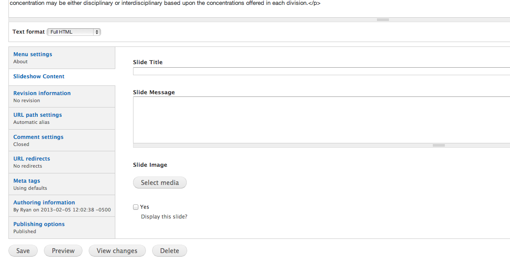

To minimize your need to understand the minutia of making webpages, I've created a modular system full of sensible defaults. Here is a reference to the kinds of content you may wish to create and how they differ.
Most slides that will be featured on the home page will link to pages on antiochcollege.org. All you need to do to create the slide is edit the page to which it links. At the bottom of the edit page, there is a "Slideshow Content" region. In this section, fill in the Slide Title, Slide Message. If you want to create a slide, but not display it until later, simply leave "Display this slide" unchecked.

If you wish to create a slide that links to a page on some other site, Add content of type "External slide"